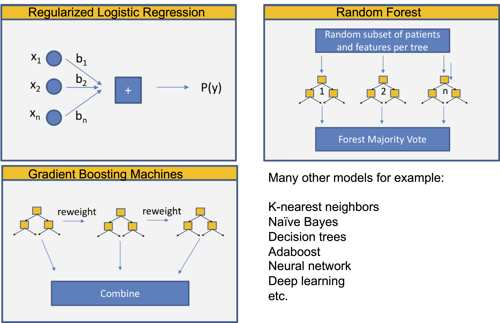
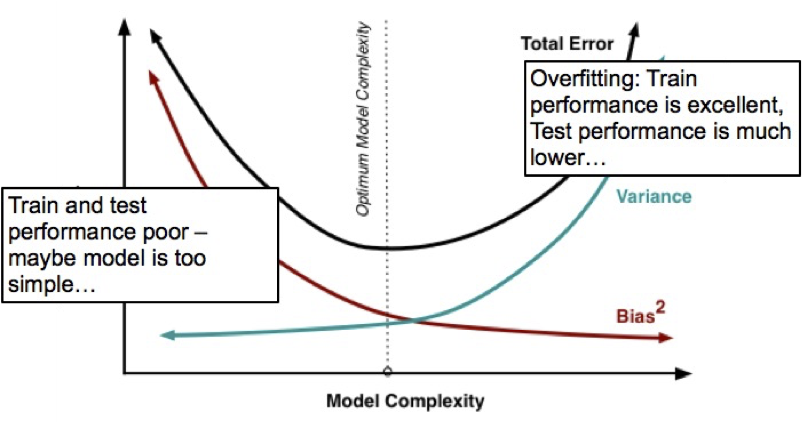

Patient-level prediction
Biostat 218
Introduction
In these lectures we will learn about:
Prediction modeling
Differences with casual inference
Standardizing prediction via the
PatientLevelPredictionpackage

Prediction problem statement

Among a target (T) cohort, we aim to predict which patients at a defined moment in time (\(t = 0\)) will experience some outcome (O) during a time-at-risk.
Prediction is done using only information about the patients in an observation window prior to that moment in time
Standardized models and evaluation

Model training and internal validation is performed using a test-train split:
- Person-split: individuals are assigned randomly to the trait or test sets, or
- Time-split: a split is made at a moment in time (temporal validation)
Standardized models and evaluation
Which predictive model to choose?
How to evaluate that choice?

Training the classifier
- Learns a decision boundary that attempts to partition outcome classes
- Different classifiers lead to different decision boundaries
- Hyper-parameters control properties of decision boundaries (e.g. smoothness, complexity)

Cross-validation
- Often used to select hyper-parameters (generally within train-set)
- Bias-variance trade-off on complexity

Books

Standardized models and evaluation
What makes a good model?
Discrimination: differentiates between those with and without the outcome event, i.e. predicts higher probabilities for those with the event compared to those who do not experience the event
Calibration: estimated probabilities are close to their observed frequencies